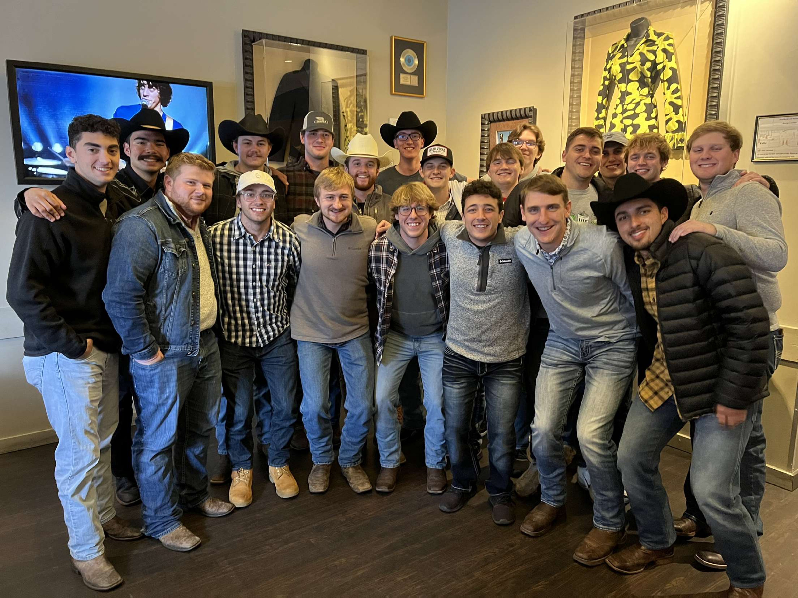

About Me
Hello, my name is Aaron Witting, and I am in the second semester of my senior year at the University of Missouri. I plan to hopefully finish up my college career this semester and graduate with a degree in Information Technology as well as a few different certificates I have picked up along the way. Once I graduate, I hope to secure a career in IT. More specifically, I am interested in working with hardware, networking, and cyber-security.

Interests
I am not studying or doing homework for class, I enjoy spending my time hanging out with friends and family, playing video games, reading, playing/watching sports, listening to music, and, more recently, cooking. Cooking is one of my newer hobbies I have gotten into. I am very happy with this hobby because it helps me to eat healthier as well as save money by meal prepping and eating leftovers.
Educational Overview
In the spring of 2020, I graduated form Boonville High School in Boonville, Missouri. I am currently in my final semester as a student in the Information Technology program at the University of Missouri. At the university, I am certified in Digital Design, Information Systems, and Cyber-Security.

Success is falling nine times and getting up ten - Jon Bon Jovi